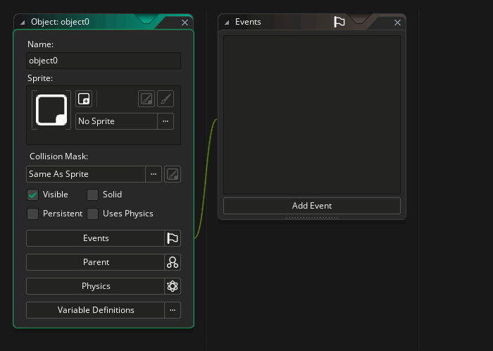

We are now going to make our game objects. Objects are the resource that we use to control aspects of a game and to do specific things. They can be given a sprite, have behaviours, and they can be instructed to react to certain game events as well as to each other.
So, let's make our first object! This object is going to be for the "bricks" that we want our player to break. To create this, go ahead and right-click on the Objects resource in the resource tree and select "Create Object". This will open up the Object Editor:

In the "Name" section give the object the name "obj_Brick", then click the button labelled "No Sprite". This will open the Asset Explorer where you can select the brick sprite that you drew previously: 
We don't need to change any other properties for this object, and can now move on to adding some Events. An Event is simply a moment within the game loop when something happens. The main ones are:
- Create: This is triggered the first time an instance of the object is created in a room and is where you would initialise variables and set values etc...
- Step: Each game step (or frame) this event will be triggered, and it's where you would place the majority of the objects logic
- Draw: This is where things are drawn. If you have no code in this event, then GameMaker Studio 2 will automatically draw whatever sprite is assigned to the object
- Destroy: This event is only triggered when an instance of the object is destroyed (removed from the room) and can be used for a variety of tasks like creating an explosion, or adding score, or playing a sound, etc...
For more detailed information on all of the events that an object can have, please see the manual.
In the case of our brick object, we will need to use the Create Event only (for now), so in the Event window, click the Add Event button and select Create. This event will now be added and a code window will open up ready for you to add your code to it. In this case we want to add the following:
/// @description Set Colour
image_blend = choose(c_red, c_yellow, c_blue, c_green, c_fuchsia, c_orange);
The image_blend variable is a built-in variable that controls the colour to be blended with the object sprite. In this case we are telling GameMaker Studio 2 to choose from one of six colours, and this will make our bricks all be different colours when they are created in a room.
With that done, you can close the Object Editor for the brick, and we can move on to creating the ball object...